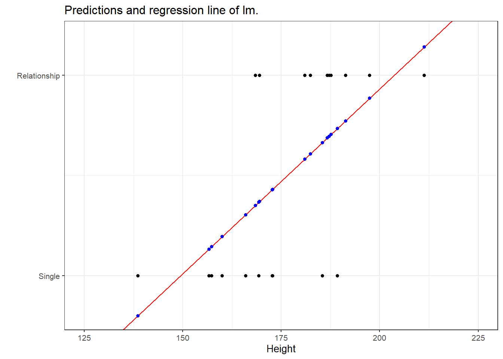
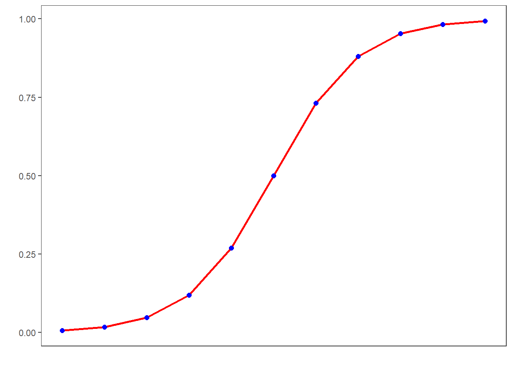
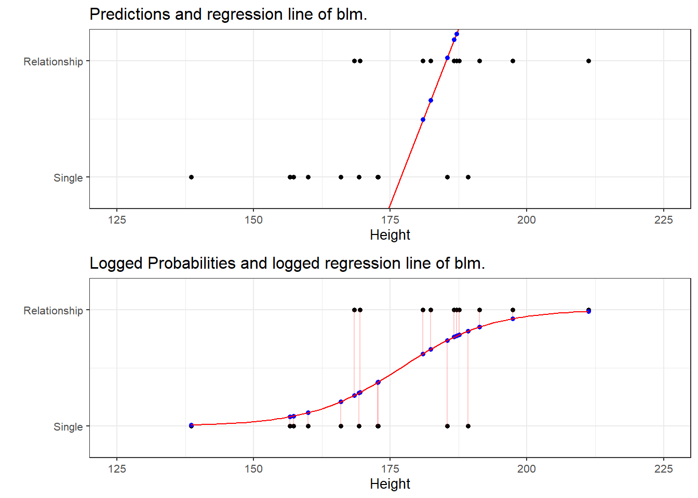
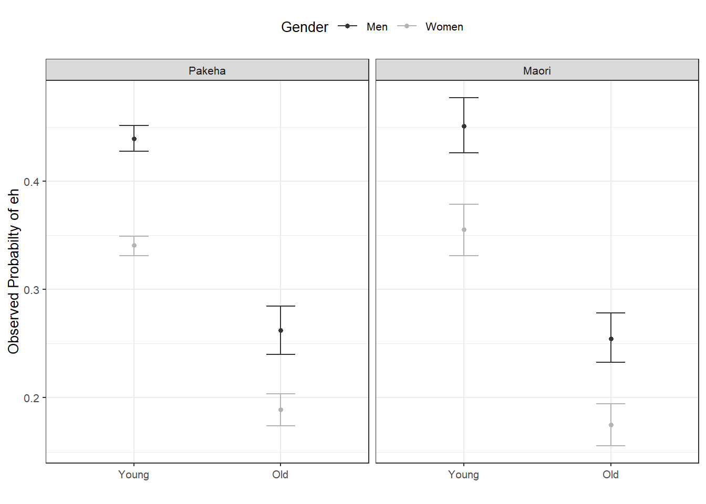
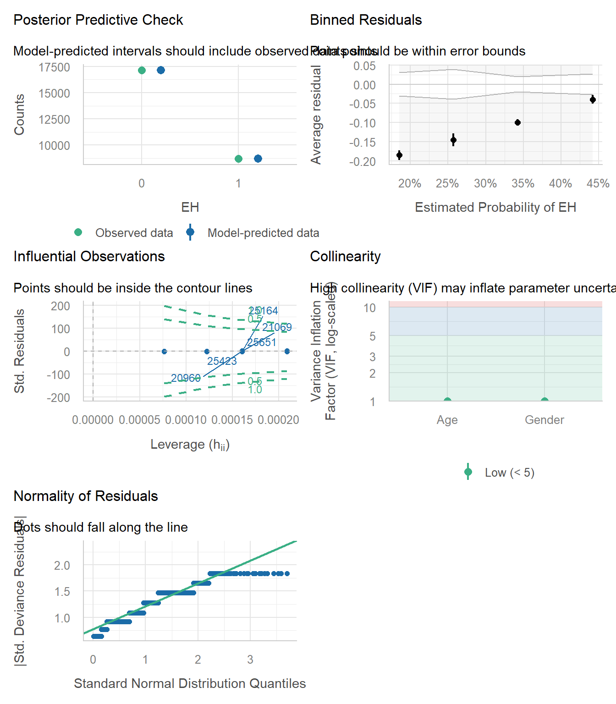
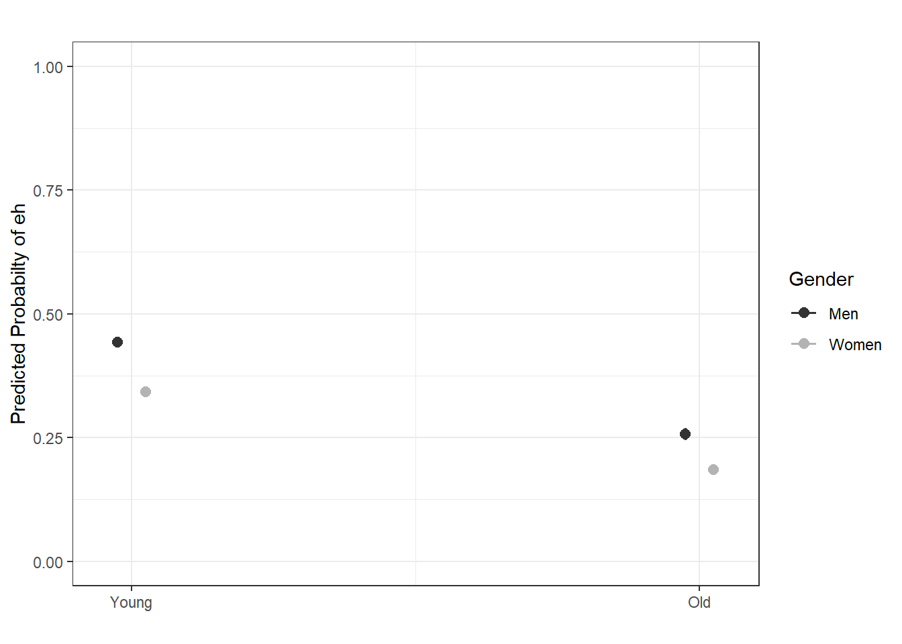

# install
install.packages("car")
install.packages("dplyr")
install.packages("flextable")
install.packages("performance")
install.packages("see")
install.packages("gridExtra")
install.packages("ggplot2")
install.packages("rms")
install.packages("sjPlot")11 (Different) Types of Regression
What This Session Covers
This session generalizes regression beyond numeric outcomes, focusing on (binomial) logistic regression for binary outcomes.
- Basic concepts - why linear regression fails for binary outcomes; probabilities, odds, and log-odds
- Example - modeling the use of eh in New Zealand English
- Model building and fitting - stepwise comparison towards a minimal adequate model
- Model diagnostics - binned residuals, collinearity, influential observations
- Effect sizes and odds ratios - interpreting and reporting logistic models
- Outlook - other regression types (multinomial, ordinal, Poisson)
This week, we continue with regression analyses and expand on last week by using a regression to analyse a nominal dependent variable. Regression models that are fit to nominal dependent variables are called (binomial) logistic regressions.
Preparation and session set up
In this tutorial, we will need the following packages; please install them by running the code below if you have not installed them already.
Once you have installed the packages (either now or before), we activate them as shown below.
# set options
options("scipen" = 100, "digits" = 12) # suppress math annotation
# load packages
library(dplyr)
library(car)
library(flextable)
library(gridExtra)
library(ggplot2)
library(rms)
library(sjPlot)
library(performance)
library(see)Once you have initiated the session by executing the code shown above, you are good to go.
11.1 Basic Concepts
Key concept: Probabilities, odds, and log-odds
Logistic regression models a binary outcome on the log-odds scale. The three scales are related but distinct: a probability ranges from 0 to 1 (e.g. .75); the odds are the ratio of the probability of an event to the probability of its absence (.75/.25 = 3, i.e. 3 to 1); and the log-odds (logit) are the natural logarithm of the odds (log(3) ≈ 1.1), ranging from −∞ to +∞ - which is what makes linear modeling possible. Coefficients in the model output are on the log-odds scale; exponentiating them (exp()) yields odds ratios, which are easier to interpret: an odds ratio of 2 means the odds double.
Logistic regression is a multivariate analysis technique that builds on linear regression but takes nominal dependent variables (rather than a numeric dependent variable) (Harrell Jr 2015). The difference requires that the linear regression must be modified in certain ways to avoid predicting outcomes that do not make sense. For example, a linear model that is applied to a nominal dependent variable (e.g., 0 = not pregnant, 1 = pregnant) would predict negative values or values greater than 1 when there are only 2 possible outcomes.
To avoid this, logistic regressions work on the probabilities of an outcome (the likelihood), rather than the outcome itself. In addition, the likelihoods on which the logistic regression works is logged (logarithmized) in order to avoid making nonsensical predictions.
To understand what this mean, we will use a very simple example. In this example, we want to see whether the height of men affect their likelihood of being in a relationship. The data we use represents a data set consisting of two variables: height and relationship.
bodyheight | relationship |
|---|---|
138.6 | 0 |
156.6 | 0 |
157.3 | 0 |
160.0 | 0 |
165.9 | 0 |
168.4 | 1 |
169.3 | 0 |
169.5 | 1 |
172.7 | 0 |
172.8 | 0 |
181.0 | 1 |
182.4 | 1 |
185.4 | 0 |
186.7 | 1 |
187.1 | 1 |
187.6 | 1 |
189.2 | 0 |
191.3 | 1 |
197.4 | 1 |
211.3 | 1 |
Let us now fit a linear regression model to the data and see what happens if we plot the predictions of the model.

The figure above shows that a linear model would predict values for the relationship status, which represents a factor (0 = Single and 1 = In a Relationship), that are nonsensical because values above 1 or below 0 do not make sense.
To avoid this issue, we can log the values so that they fall between 0 and 1. You can check this by logging the values from -5 to 5 using the plogis function as shown below.
round(plogis(-5:5), 5) [1] 0.00669 0.01799 0.04743 0.11920 0.26894 0.50000 0.73106 0.88080 0.95257
[10] 0.98201 0.99331While the original values range from -5 to 5, the logged values fall within a range from 0 to 1. If we visualize these logged values, we can confirm that the values are between 0 and 1 and see that they follow an S-shaped curve which mirrors the underlying logistic function.

Let us now fit a binomial logistic regression model to the data and see what happens if we plot the predictions of the models as well as the probabilities provided by the logistic model.

Surprisingly, the upper panel shows that the predictions of a logistic regression are similar to a linear model and that they also fall outside the range of 0 and 1. We can also plot the regression line of a logistic regression. We can do this because a logistic regression also has an intercept and a (very steep) slope. The regression line confirms that the predicted values that are above 1 and below 0.
However, when we log the predicted values we see that these logged predicted values are transformed into probabilities with values between 0 and 1. Also, the logged regression line has a S-shape which reflects the logistic function.
Note also, that we can use these logged predicted values to find the optimal line (the line with the lowest residual deviance) by comparing the sum of residuals - just as we did for a simple linear model and that way, we find the regression line for a logistic regression.
Thus, in contrast to a linear regression, which predicts actual values, such as the frequencies of prepositions in a certain text, a logistic regression predicts probabilities of events (for example, being in a relationship) rather than actual values.
11.2 Example: EH in Kiwi English
To exemplify how to implement a logistic regression in R (see Agresti 1996; Agresti and Kateri 2011 for very good and thorough introductions to this topic), we will analyze the use of the discourse particle eh in New Zealand English and test which factors correlate with its occurrence. The data set represents speech units in a corpus that were coded for the speaker who uttered a given speech unit, the gender, ethnicity, and age of that speaker and whether or not the speech unit contained an eh. To begin with, we clean the current work space, set option, install and activate relevant packages, load customized functions, and load the example data set.
# load data
blrdata <- base::readRDS(url("https://slcladal.github.io/data/bld.rda", "rb"))ID | Gender | Age | Ethnicity | EH |
|---|---|---|---|---|
<S1A-001#M> | Men | Young | Pakeha | 0 |
<S1A-001#M> | Men | Young | Pakeha | 1 |
<S1A-001#M> | Men | Young | Pakeha | 0 |
<S1A-001#M> | Men | Young | Pakeha | 0 |
<S1A-001#M> | Men | Young | Pakeha | 1 |
<S1A-001#M> | Men | Young | Pakeha | 1 |
<S1A-001#M> | Men | Young | Pakeha | 0 |
<S1A-001#M> | Men | Young | Pakeha | 0 |
<S1A-001#M> | Men | Young | Pakeha | 0 |
<S1A-001#M> | Men | Young | Pakeha | 1 |
<S1A-001#M> | Men | Young | Pakeha | 0 |
<S1A-001#M> | Men | Young | Pakeha | 0 |
<S1A-001#M> | Men | Young | Pakeha | 1 |
<S1A-001#M> | Men | Young | Pakeha | 1 |
<S1A-001#M> | Men | Young | Pakeha | 0 |
The summary of the data show that the data set contains 25,821 observations of five variables. The first variable (ID) contains strings that represent a combination file and speaker of a speech unit. The second variable represents the gender, the third the age, and the fourth the ethnicity of speakers. The fifth variable represents whether or not a speech unit contained the discourse particle eh.
Next, we factorize the variables in our data set. In other words, we specify that the strings represent variable levels and define new reference levels because as a default R will use the variable level which first occurs in alphabet ordering as the reference level for each variable, we redefine the variable levels for Age and Ethnicity.
blrdata <- blrdata |>
# factorize variables
dplyr::mutate_if(is.character, factor) |>
# relevel Age (Reference = Young) and Ethnicity (Reference= Pakeha))
dplyr::mutate(Age = relevel(Age, "Young"),
Ethnicity = relevel(Ethnicity, "Pakeha"))After preparing the data, we will now plot the data to get an overview of potential relationships between variables.
blrdata |>
dplyr::mutate(EH = ifelse(EH == "0", 0, 1)) |>
ggplot(aes(Age, EH, color = Gender)) +
facet_wrap(~Ethnicity) +
stat_summary(fun = mean, geom = "point") +
stat_summary(fun.data = mean_cl_boot, geom = "errorbar", width = 0.2) +
theme_bw(base_size = 10) +
theme(legend.position = "top") +
labs(x = "", y = "Observed Probabilty of eh") +
scale_color_manual(values = c("gray20", "gray70"))
With respect to main effects, the figure above indicates that men use eh more frequently than women, that young speakers use it more frequently compared with old speakers, and that speakers that are descendants of European settlers (Pakeha) use eh similarly compared with Maori (the native inhabitants of New Zealand). In a next step, we will start building the logistic regression model.
11.3 Model Building
As a first step, we need to define contrasts and use the datadist function to store aspects of our variables that can be accessed later when plotting and summarizing the model. Contrasts define what and how variable levels should be compared and therefore influences how the results of the regression analysis are presented. In this case, we use treatment contrasts which are in-built. Treatment contrasts mean that we assess the significance of levels of a predictor against a baseline which is the reference level of a predictor. Field, Miles, and Field (2012, 414–27) and Gries (2021) provide very good and accessible explanations of contrasts and how to manually define contrasts if you would like to know more.
# set contrasts
options(contrasts =c("contr.treatment", "contr.poly"))
# extract distribution summaries for all potential variables
blrdata.dist <- datadist(blrdata)
# store distribution summaries for all potential variables
options(datadist = "blrdata.dist")Next, we generate a minimal model that predicts the use of eh solely based on the intercept.
# baseline glm model
m0.glm = glm(EH ~ 1, family = binomial, data = blrdata)11.4 Model Fitting
We will now start with the model fitting procedure. In the present case, we will use a manual step-wise step-up procedure during which predictors are added to the model if they significantly improve the model fit. In addition, we will perform diagnostics as we fit the model at each step of the model fitting process rather than after the fitting.
We will test two things in particular: whether the data has incomplete information or complete separation, if the model suffers from (multi-)collinearity, and if the predictor is significant.
Incomplete information means that the data does not contain all combinations of the predictor or the dependent variable.
Complete separation is important because if the data does not contain cases of all combinations, the model will assume that it has found a perfect predictor. In such cases the model overestimates the effect of that that predictor and the results of that model are no longer reliable. For example, if eh was only used by young speakers in the data, the model would jump on that fact and say Ha! If there is an old speaker, that means that that speaker will never ever and under no circumstances say eh* - I can therefore ignore all other factors!*
Multicollinearity means that predictors correlate and have shared variance. This means that whichever predictor is included first will take all the variance that it can explain and the remaining part of the variable that is shared will not be attributed to the other predictor. This may lead to reporting that a factor is not significant because all of the variance it can explain is already accounted for. However, if the other predictor were included first, then the original predictor would be returned as insignificant. This means that- depending on the order in which predictors are added - the results of the regression can differ dramatically and the model is therefore not reliable. Multicollinearity is actually a very common problem and there are various ways to deal with it but it cannot be ignored (at least in regression analyses).
Significance: if a model with a predictor is not better (has no better fit) compared to a model without that predictor, then we do not include the predictor in the model. In other words, we continue fitting the model without that predictor. However, If a variable is insignificant but it is part of a significant interaction, we also need to include the insignificant variable.
Step-wise model fitting
Adding predictors one-by-one is called step-wise model fitting. It is called step-wise step up if we add predictors one-by-one and step-wise step-down if we remove predictors one-by-one.
We will start by adding Age to the minimal adequate model.
# check incomplete information
ftable(blrdata$Age, blrdata$EH) 0 1
Young 11879 7271
Old 5235 1436# add age to the model
m1.glm = glm(EH ~ Age, family = binomial, data = blrdata)
# check if adding Age significantly improves model fit
anova(m1.glm, m0.glm, test = "Chi")Analysis of Deviance Table
Model 1: EH ~ Age
Model 2: EH ~ 1
Resid. Df Resid. Dev Df Deviance Pr(>Chi)
1 25819 32376.86081
2 25820 33007.75469 -1 -630.8938871 < 0.000000000000000222 ***
---
Signif. codes: 0 '***' 0.001 '**' 0.01 '*' 0.05 '.' 0.1 ' ' 1As the data does not contain incomplete information and adding Age has significantly improved the model fit (note that collinearity is not an issue in a model with only a single predictor) (the p-value of the ANOVA is lower than .05). We therefore proceed with Age included.
We continue by adding Gender. We add a second ANOVA test to see if including Gender affects the significance of other predictors in the model. If this were the case - if adding Gender would cause Age to become insignificant - then we could change the ordering in which we include predictors into our model.
ftable(blrdata$Gender, blrdata$EH) 0 1
Men 6083 3886
Women 11031 4821m2.glm <- update(m1.glm, . ~ . +Gender)
performance::check_collinearity(m2.glm)# Check for Multicollinearity
Low Correlation
Term VIF VIF 95% CI adj. VIF Tolerance Tolerance 95% CI
Age 1.00 [1.00, 1.06] 1.00 1.00 [0.94, 1.00]
Gender 1.00 [1.00, 1.06] 1.00 1.00 [0.94, 1.00]anova(m1.glm, m2.glm, test = "Chi")Analysis of Deviance Table
Model 1: EH ~ Age
Model 2: EH ~ Age + Gender
Resid. Df Resid. Dev Df Deviance Pr(>Chi)
1 25819 32376.86081
2 25818 32139.54089 1 237.319914 < 0.000000000000000222 ***
---
Signif. codes: 0 '***' 0.001 '**' 0.01 '*' 0.05 '.' 0.1 ' ' 1Anova(m2.glm, test = "LR")Analysis of Deviance Table (Type II tests)
Response: EH
LR Chisq Df Pr(>Chisq)
Age 668.6350712 1 < 0.000000000000000222 ***
Gender 237.3199140 1 < 0.000000000000000222 ***
---
Signif. codes: 0 '***' 0.001 '**' 0.01 '*' 0.05 '.' 0.1 ' ' 1Again, including Gender significantly improves model fit and the data does not contain incomplete information or complete separation. Also, including Gender does not affect the significance of Age. Now, we include Ethnicity.
ftable(blrdata$Ethnicity, blrdata$EH) 0 1
Pakeha 13112 6912
Maori 4002 1795m3.glm <- update(m2.glm, . ~ . +Ethnicity)
performance::check_collinearity(m3.glm)# Check for Multicollinearity
Low Correlation
Term VIF VIF 95% CI adj. VIF Tolerance Tolerance 95% CI
Age 1.07 [1.06, 1.09] 1.04 0.93 [0.92, 0.94]
Gender 1.01 [1.00, 1.03] 1.01 0.99 [0.97, 1.00]
Ethnicity 1.08 [1.06, 1.09] 1.04 0.93 [0.92, 0.94]anova(m2.glm, m3.glm, test = "Chi")Analysis of Deviance Table
Model 1: EH ~ Age + Gender
Model 2: EH ~ Age + Gender + Ethnicity
Resid. Df Resid. Dev Df Deviance Pr(>Chi)
1 25818 32139.54089
2 25817 32139.27988 1 0.2610145387 0.60942Since adding Ethnicity does not significantly improve the model fit, we do not need to test if its inclusion affects the significance of other predictors. We continue without Ethnicity and include the interaction between Age and Gender.
ftable(blrdata$Age, blrdata$Gender, blrdata$EH) 0 1
Young Men 3996 3158
Women 7883 4113
Old Men 2087 728
Women 3148 708m4.glm <- update(m2.glm, . ~ . +Age*Gender)
performance::check_collinearity(m4.glm)# Check for Multicollinearity
Low Correlation
Term VIF VIF 95% CI adj. VIF Tolerance Tolerance 95% CI
Age 2.16 [2.12, 2.20] 1.47 0.46 [0.45, 0.47]
Gender 1.27 [1.25, 1.29] 1.13 0.79 [0.78, 0.80]
Age:Gender 2.34 [2.30, 2.39] 1.53 0.43 [0.42, 0.44]anova(m2.glm, m4.glm, test = "Chi")Analysis of Deviance Table
Model 1: EH ~ Age + Gender
Model 2: EH ~ Age + Gender + Age:Gender
Resid. Df Resid. Dev Df Deviance Pr(>Chi)
1 25818 32139.54089
2 25817 32139.41665 1 0.124239923 0.72448The interaction between Age and Gender is not significant which means that men and women do not behave differently with respect to their use of EH as they age. Also, the data does not contain incomplete information and the model does not suffer from multicollinearity - the VIFs reported by check_collinearity are low, i.e. the predictors are not collinear. We can now include if there is a significant interaction between Age and Ethnicity.
ftable(blrdata$Age, blrdata$Ethnicity, blrdata$EH) 0 1
Young Pakeha 10057 6062
Maori 1822 1209
Old Pakeha 3055 850
Maori 2180 586m5.glm <- update(m2.glm, . ~ . +Age*Ethnicity)
performance::check_collinearity(m5.glm)# Check for Multicollinearity
Low Correlation
Term VIF VIF 95% CI adj. VIF Tolerance Tolerance 95% CI
Age 1.60 [1.57, 1.62] 1.26 0.63 [0.62, 0.64]
Gender 1.01 [1.00, 1.03] 1.01 0.99 [0.97, 1.00]
Ethnicity 1.55 [1.52, 1.57] 1.24 0.65 [0.64, 0.66]
Age:Ethnicity 2.25 [2.21, 2.30] 1.50 0.44 [0.44, 0.45]anova(m2.glm, m5.glm, test = "Chi")Analysis of Deviance Table
Model 1: EH ~ Age + Gender
Model 2: EH ~ Age + Gender + Ethnicity + Age:Ethnicity
Resid. Df Resid. Dev Df Deviance Pr(>Chi)
1 25818 32139.54089
2 25816 32136.47224 2 3.068654514 0.2156Again, no incomplete information or multicollinearity and no significant interaction. Now, we test if there exists a significant interaction between Gender and Ethnicity.
ftable(blrdata$Gender, blrdata$Ethnicity, blrdata$EH) 0 1
Men Pakeha 4362 2935
Maori 1721 951
Women Pakeha 8750 3977
Maori 2281 844m6.glm <- update(m2.glm, . ~ . +Gender*Ethnicity)
performance::check_collinearity(m6.glm)# Check for Multicollinearity
Low Correlation
Term VIF VIF 95% CI adj. VIF Tolerance Tolerance 95% CI
Age 1.07 [1.06, 1.09] 1.04 0.93 [0.92, 0.94]
Gender 1.30 [1.28, 1.32] 1.14 0.77 [0.76, 0.78]
Ethnicity 2.20 [2.16, 2.24] 1.48 0.45 [0.45, 0.46]
Gender:Ethnicity 2.31 [2.26, 2.35] 1.52 0.43 [0.43, 0.44]anova(m2.glm, m6.glm, test = "Chi")Analysis of Deviance Table
Model 1: EH ~ Age + Gender
Model 2: EH ~ Age + Gender + Ethnicity + Gender:Ethnicity
Resid. Df Resid. Dev Df Deviance Pr(>Chi)
1 25818 32139.54089
2 25816 32139.26864 2 0.2722521835 0.87273As the interaction between Gender and Ethnicity is not significant, we continue without it. In a final step, we include the three-way interaction between Age, Gender, and Ethnicity.
ftable(blrdata$Age, blrdata$Gender, blrdata$Ethnicity, blrdata$EH) 0 1
Young Men Pakeha 3237 2535
Maori 759 623
Women Pakeha 6820 3527
Maori 1063 586
Old Men Pakeha 1125 400
Maori 962 328
Women Pakeha 1930 450
Maori 1218 258m7.glm <- update(m2.glm, . ~ . +Age*Gender*Ethnicity)
performance::check_collinearity(m7.glm)# Check for Multicollinearity
Low Correlation
Term VIF VIF 95% CI adj. VIF Tolerance Tolerance 95% CI
Age 3.66 [3.58, 3.74] 1.91 0.27 [0.27, 0.28]
Gender 1.53 [1.51, 1.56] 1.24 0.65 [0.64, 0.66]
Ethnicity 3.37 [3.30, 3.44] 1.84 0.30 [0.29, 0.30]
Age:Gender 3.76 [3.68, 3.84] 1.94 0.27 [0.26, 0.27]
Age:Ethnicity 4.66 [4.56, 4.77] 2.16 0.21 [0.21, 0.22]
Gender:Ethnicity 3.54 [3.47, 3.62] 1.88 0.28 [0.28, 0.29]
Age:Gender:Ethnicity 4.43 [4.33, 4.52] 2.10 0.23 [0.22, 0.23]anova(m2.glm, m7.glm, test = "Chi")Analysis of Deviance Table
Model 1: EH ~ Age + Gender
Model 2: EH ~ Age + Gender + Ethnicity + Age:Gender + Age:Ethnicity +
Gender:Ethnicity + Age:Gender:Ethnicity
Resid. Df Resid. Dev Df Deviance Pr(>Chi)
1 25818 32139.54089
2 25813 32136.00748 5 3.533413832 0.61834We have found our final minimal adequate model because the 3-way interaction is also insignificant. As we have now arrived at the final minimal adequate model (m2.glm), we perform the model diagnostics on this final model before we turn to interpretation. As with linear regressions, we use the check_model function from the performance package (Lüdecke et al. 2021) - note, however, that the panels differ from those for linear models because logistic regressions do not assume normally distributed residuals: for binomial models, the binned residuals panel replaces the normality- and homoscedasticity-related panels. In the binned residuals plot, the data are divided into bins based on their fitted values and the average residual per bin is displayed - ideally, (nearly) all points should fall within the error bounds.
# generate diagnostic plots
performance::check_model(m2.glm)
We can also formally check for influential observations. As all predictors in our model are categorical, we extract the Cook’s distances directly from the model (Cook’s distance shows how much the model changes when it is re-fitted without a given data point; values greater than 1 are considered problematic).
# extract Cook's distances
cooksd <- cooks.distance(m2.glm)
# inspect the maximum Cook's distance
max(cooksd)[1] 0.000235972173163# check if any data points have a Cook's distance value greater than 1
which(cooksd > 1)named integer(0)The diagnostics do not indicate any problems and we continue by checking the effect sizes of the predictors in our final model (Age and Gender).
11.5 Effect Size
We summarize the final minimal adequate model in tabulated form.
sjPlot::tab_model(m2.glm)| EH | |||
| Predictors | Odds Ratios | CI | p |
| (Intercept) | 0.79 | 0.76 – 0.83 | <0.001 |
| Age [Old] | 0.44 | 0.41 – 0.47 | <0.001 |
| Gender [Women] | 0.66 | 0.62 – 0.69 | <0.001 |
| Observations | 25821 | ||
| R2 Tjur | 0.032 | ||
The effects are reported as Odds Ratios - but what are odds ratios and how can you interpret them?
Odds ratios are an effect size measure (or an association strength measure) that ranges between 0 and infinity. If the odds ratios are
- 1, then the presence of a factor level does not affect the probability of an outcome
- smaller than 1, then the presence of a factor level decreases the probability of an outcome
- bigger than 1, then the presence of a factor level increases the probability of an outcome.
The odds of an event are related to its probability: if the probability that an eh is produced by a woman is 20 percent (this is equal to .2 or 1/5 or 1 out of 5), then the odds are .25 (this is equal to 1/4 or 1 against 4).
Odds ratios are the odds of an eh being produced by a woman (1/4) divided by the odds of an eh not being produced by a woman (3/4). In this example, the odds ratio of an eh being produced by woman are thus (1/4) / (3/4) = .25 / .75 = .33. If the odds ratios are positive, then they tell us how many times more likely an outcome is: if Gender[woman] had an odds ratio of 2, then this would mean that the outcome is twice as likely if the speaker is a woman.
In a next step, we can use the plot_model function from the sjPlot package (Lüdecke 2021) to visualize the effects.
sjPlot::plot_model(m2.glm,
type = "pred",
terms = c("Age", "Gender"),
axis.lim = c(0, 1)) +
theme(legend.position = "top") +
labs(x = "", y = "Predicted Probabilty of eh", title = "") +
scale_color_manual(values = c("gray20", "gray70")) +
theme_bw()
11.6 Summarizing Results
We can use the reports package (Makowski et al. 2021) to summarize the analysis.
report::report(m2.glm)We fitted a logistic model (estimated using ML) to predict EH with Age and
Gender (formula: EH ~ Age + Gender). The model's explanatory power is weak
(Tjur's R2 = 0.03). The model's intercept, corresponding to Age = Young and
Gender = Men, is at -0.23 (95% CI [-0.28, -0.19], p < .001). Within this model:
- The effect of Age [Old] is statistically significant and negative (beta =
-0.83, 95% CI [-0.90, -0.77], p < .001; Std. beta = -0.83, 95% CI [-0.90,
-0.77])
- The effect of Gender [Women] is statistically significant and negative (beta
= -0.42, 95% CI [-0.47, -0.37], p < .001; Std. beta = -0.42, 95% CI [-0.47,
-0.37])
Standardized parameters were obtained by fitting the model on a standardized
version of the dataset. 95% Confidence Intervals (CIs) and p-values were
computed using a Wald z-distribution approximation.We can use this output to write up a final report:
We fitted a logistic model (estimated using ML) to predict the use of the utterance-final discourse particle eh with Age and Gender (formula: EH ~ Age + Gender). The model’s explanatory power is weak (Tjur’s R2 = 0.03). The model’s intercept, corresponding to Age = Young and Gender = Men, is at -0.23 (95% CI [-0.28, -0.19], p < .001). Within this model:
The effect of Age [Old] is statistically significant and negative (beta = -0.83, 95% CI [-0.90, -0.77], p < .001; Std. beta = -0.83, 95% CI [-0.90, -0.77])
The effect of Gender [Women] is statistically significant and negative (beta = -0.42, 95% CI [-0.47, -0.37], p < .001; Std. beta = -0.42, 95% CI [-0.47, -0.37])
11.7 Outlook
If you want to see how you can run a multinomial regression (which takes a categorical dependent variable) or an ordinal regression (which takes an ordinal dependent variable), have a look at the LADAL tutorial on regression analysis.
Exercises: Logistic Regression
Q1. Why can’t we use ordinary linear regression to model a binary outcome (e.g. whether a speaker uses eh)?
Q2. A logistic regression yields an odds ratio of 2.5 for young (vs. old) speakers using eh. How do you interpret this?
Q3. What does the C-statistic (concordance index) of a logistic regression measure?
Agresti, Alan. 1996. An Introduction to Categorical Data Analysis. Hoboken, NJ: JohnWiley & Sons.
Agresti, Alan, and Maria Kateri. 2011. Categorical Data Analysis. Springer.
Field, Andy, Jeremy Miles, and Zoe Field. 2012. Discovering Statistics Using r. Sage.
Gries, Stefan Th. 2021. Statistics for Linguistics Using r: A Practical Introduction. Berlin & New York: Mouton de Gruyter.
Harrell Jr, Frank E. 2015. Regression Modeling Strategies: With Applications to Linear Models, Logistic and Ordinal Regression, and Survival Analysis. Springer.
Lüdecke, Daniel. 2021. sjPlot: Data Visualization for Statistics in Social Science. https://CRAN.R-project.org/package=sjPlot.
Lüdecke, Daniel, Mattan S. Ben-Shachar, Indrajeet Patil, Philip Waggoner, and Dominique Makowski. 2021. “Performance: An R Package for Assessment, Comparison and Testing of Statistical Models.” Journal of Open Source Software 6 (60): 3139. https://doi.org/10.21105/joss.03139.
Makowski, Dominique, Mattan S. Ben-Shachar, Indrajeet Patil, and Daniel Lüdecke. 2021. “Automated Results Reporting as a Practical Tool to Improve Reproducibility and Methodological Best Practices Adoption.” CRAN. https://github.com/easystats/report.